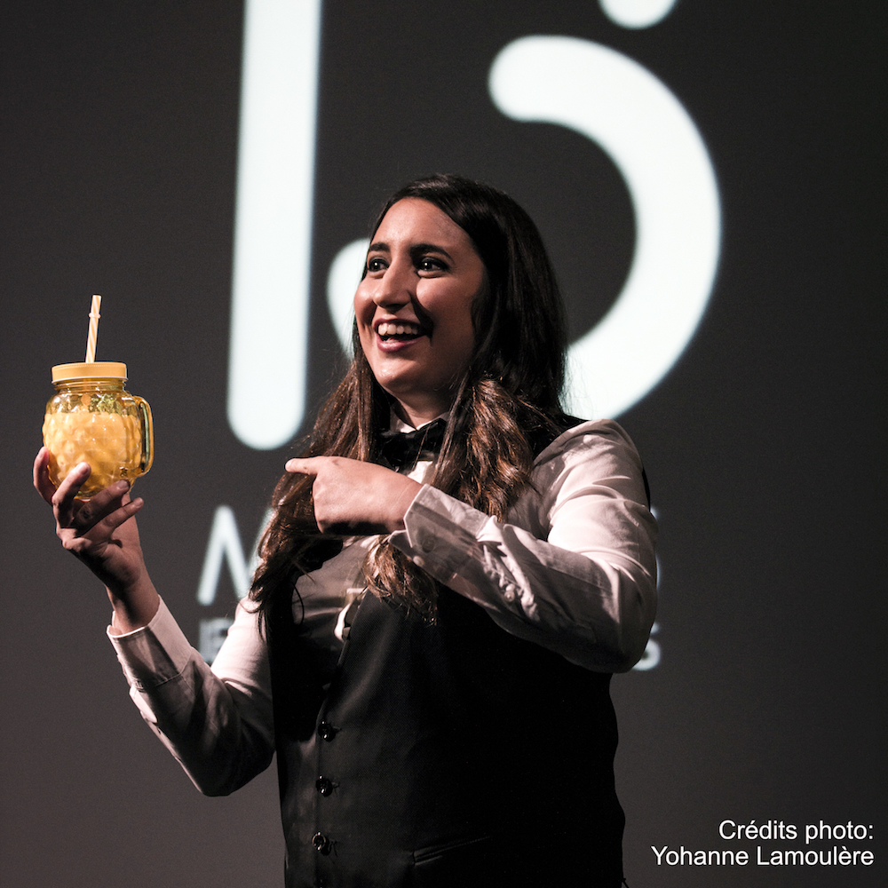
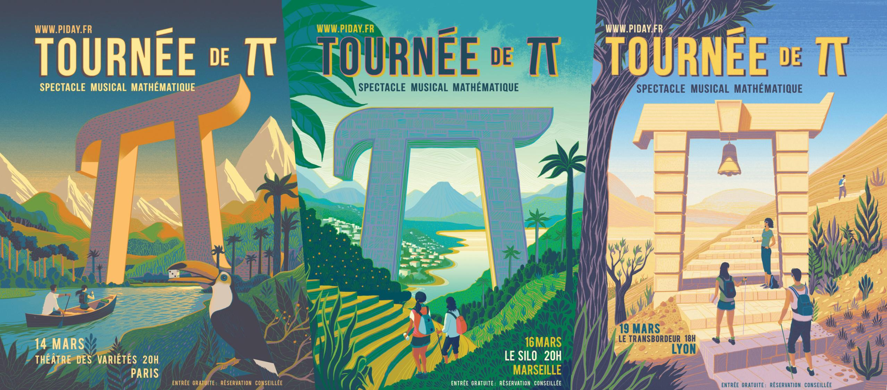
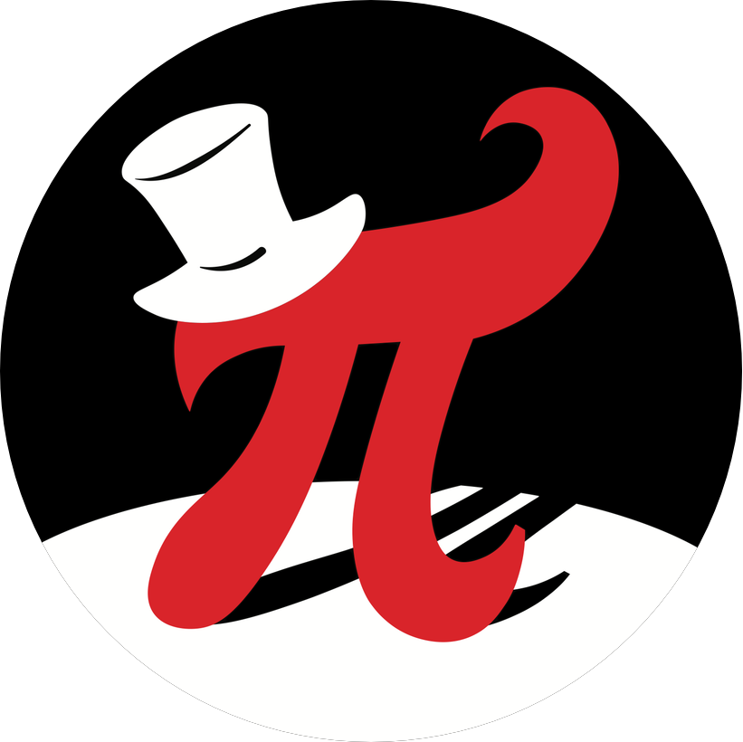

Activités de Diffusion
Très passionnée par la diffusion des mathématiques et des sciences plus en général, je suis :
- membre fondateur et secrétaire de l'association Pi day pour la diffusion des mathématiques auprès du grand public, lauréate du prix d'Alembert 2016 décerné par la Société Mathématique de France. Dans ce cadre, j'organise notamment la Journée de π depuis 2015, ce qui est devenue la Tournée de π pour l'édition 2017.
- membre du GDS Audimath (Groupement de Services : Autour de la Diffusion des Mathématiques), réseau créé par l’Institut National Sciences Mathématiques et de leurs Interactions (INSMI) du CNRS et destiné à apporter un soutien à tous les acteurs de la communauté universitaire investis dans le développement des activités de diffusion des mathématiques auprès des publics extra-universitaires.
Événements passés
J'ai fait partie des équipes de pilotage des événements suivants :- Treize Minutes Jeunes Chercheurs, 26 avril 2017, Alcazar (300 personnes), Marseille Soirée de petites conférences pluridisciplinaires par les jeunes chercheurs organisée par un groupe de doctorants de l'Université d'Aix-Marseille sur une idée originale de l'Université Paris Diderot.

-
La Tournée de $\pi$, Marseille-Lyon-Paris, pendant la Semaine des Mathématiques du 13 au 17 mars 2017 : 3.14 Paris (Théâtre des Variétés), 3.16 Marseille (Le Silo), 3.19 Lyon (Le Transbordeur) (2000 personnes) Comédie musicale mathématique From Marseille to Vegas entrelacé de courtes conférences tout public, par des orateurs différents pour chaque ville.

-
Treize Minutes Jeunes Chercheurs, 10 mai 2016, Alcazar (300 personnes), Marseille Soirée de petites conférences pluridisciplinaires par les jeunes chercheurs organisée par un groupe de doctorants de l'Université d'Aix-Marseille sur une idée originale de l'Université Paris Diderot.
- 
Pi day 2016, 14 mars 2016, Théâtre National de la Criée (700 personnes), Marseille Spectacle musical mathématique, articulé autour d'exposés tout public, pour célébrer dans la bonne humeur la plus fameuse des constantes.
Pour ce spectacle, l'assocation Pi day a reçu le prix d'Alembert 2016 qui recompense les initiatives de diffusion mathématique, ainsi que le Trophée Phocéen 2016 de la ville de Marseille pour les initatives étudiantes.
- Journée de $\pi$ 2015, 14 mars 2015, MuCEM (500 personnes), Marseille Journée mathématique, articulée autour d'une matinée-spectacle avec des exposés tout public, d'un concours de tartes et d'une après midi d'ateliers et d'animations ludiques.
Exposés
- Allô Papa Tango Charlie - Théorie des codes correcteurs, pour une classe 1ère S Maths en Jeans, Marseille - 22/01/2016. slides
- Les nombres premiers ne sont pas si aléatoires, Journée d'étude À travers champs sur le thème du hasard, Fort Saint-Jean, Marseille - 06/06/2014. slidesaudio
- L'hypothèse de Riemann dans le paysage des courbes sur les corps finis , Séminaire des doctorants, Marseille - 25/03/2014.
- Pi... comme pizza , Journée de $\pi$ 2014, Marseille - 14/03/2014.
Stands, expositions, etc.
- Animation pour le stand : Tous les chemins mènent à Rome-Dragon (T3), Fête de la Science 2016, Vieille Charité, Marseille - octobre 2016
- Animatrice pour l'exposition Imaginary au 17ième Salon Culture et Jeux Mathématiques - mai 2016, place Saint-Sulpice, Paris VI.
- Participation à l'écriture de la pièce théâtrale Les $\pi$ travaux d'Archimède, représentée à l'occasion du Pi day 2016, dans la grande salle du Théâtre National de la Criée à Marseille.
- Conception et animation du stand : Le charabia du numérique : mégapixels, gigaoctets, cryptage... et autres gros mots !, Fête de la Science 2015, Villa Méditerranée, Marseille - octobre 2015
- Initiation aux mathématiques et jeux de piste dans la bibliothèque du CIRM pour des élèves de CE1 et CE2, CIRM, Marseille - 02/07/2015.
- Animatrice pour l'exposition Imaginary au Vieux Port (Marseille), à l'occasion du Forum des Matéhématiques Vivantes - 22/03/2015.
- Conception et animation du stand : Les Mathématiques nous transportent en... cuisine !, Journée de l'école au monde, Ecole de la Deuxième Chance, Marseille - 20/03/2015.
- Conception et animation du stand : Les Mathématiques nous transportent en... cuisine !, Journée de $\pi$ 2015, MuCEM, Marseille - 14/03/2015.